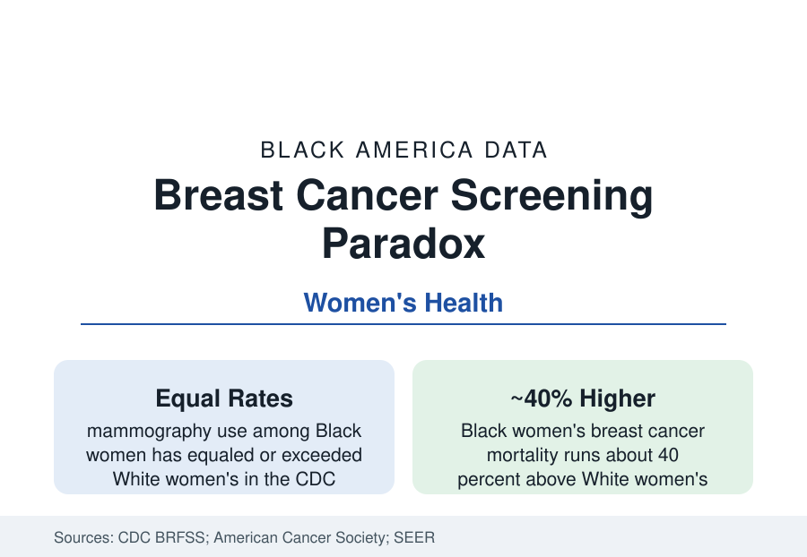

Black Public Health
Breast Cancer Screening in Black Women: Equal Mammograms, Unequal Outcomes
Black women are screened for breast cancer at rates equal to White women's — and die of it at rates about 40 percent higher. The screening paradox in the data.

Black women get mammograms at rates equal to — in several survey years above — White women's, a parity the Behavioral Risk Factor data have recorded for two decades. Black women also die of breast cancer at rates roughly 40 percent higher. The coexistence of equal screening and unequal outcomes is the women's-health file's central paradox, and its resolution in the literature is a tour of everything that happens after the screening test itself. This article reports the data.
Incidence: Lower, Younger, Different Biology
The registry data set the terms. Black women's overall breast cancer incidence runs slightly below White women's — the rates crossed near parity in recent SEER editions — but the age and subtype distributions differ in the directions that matter: Black women are diagnosed younger on average (a higher share of cases before 50), and their tumors are disproportionately of the aggressive subtypes — triple-negative breast cancer (negative for estrogen, progesterone, and HER2 receptors) occurs at roughly twice the rate in Black women as in White women in the registry data, and the inflammatory and high-grade shares run similarly elevated. The subtype distribution is the biology term in the equation: triple-negative disease lacks the targeted endocrine therapies that transformed the common subtypes' prognoses, recurs earlier, and depends most heavily on chemotherapy access and timing — the variables the next sections measure.
After the Mammogram: The Follow-Up Cascade
Screening is a cascade, and the disparity lives in its steps. The health-services data document the sequence: Black women's screening mammograms are more often performed at lower-resourced facilities (with older equipment and less subspecialty reading in the facility studies); abnormal results receive diagnostic follow-up more slowly (the time-to-diagnostic-resolution literature finds Black women's intervals longer, with the share exceeding 60 days — the delay threshold the outcomes studies flag — roughly double in several analyses); biopsies and surgical consultations queue behind the same access variables; and treatment initiation (the interval from diagnosis to first therapy, whose prolongation the survival models price) runs longer on average. Each step's gap is modest; the cascade multiplies them. The navigation programs — patient navigators guiding women through the sequence, pioneered in Harlem's breast program and now an evidence-based standard — exist precisely because the cascade, not the test, is where the system loses people.
Treatment and the Equal-Access Evidence
Within treatment, the analyses repeat the section's refrain. Stage-for-stage and subtype-for-subtype, survival gaps narrow markedly; in equal-access systems (the military health system's published series) they narrow most; the residual concentrates in treatment completion (endocrine-therapy adherence over the five-to-ten-year course, where the pharmacy data show discontinuation gaps), comorbidity management, and the aggressive subtypes' thinner therapeutic options. The mortality trend lines give the system's report: breast cancer mortality has fallen for both groups across the screening-and-treatment era, but White women's fell faster for three decades — the gap widened from near zero in the 1980s to its current ~40 percent — before stabilizing in the recent data, a trajectory that is itself the strongest evidence that the disparity is substantially a systems product: the technologies diffused unevenly, and the mortality map followed the diffusion.
The Young-Women and Density Files
Two current files extend the profile. The first is young women's disease: breast cancer is the most common cancer in Black women under 40, the screening guidelines' starting ages (40 in the current task-force recommendation, revised downward partly on the disparity data) frame detection for a population whose cancers arrive earlier and denser-breasted — mammographic sensitivity is lower in dense tissue, and the supplemental-screening (ultrasound, MRI) access data stratify by the same insurance variables. The second is the survivorship file: Black survivors record higher rates of treatment-related financial hardship, lymphedema, and cardiac late effects in the survivorship surveys, and lower enrollment in the survivorship-care infrastructure — the cascade's final, longest step.
Reading the Screening Paradox
The mammography parity is real, and it is the good news that indicts the rest of the system: when the front door is equal, the building behind it is where the outcomes divide. Black women's breast file — equal tests, later stages, slower cascades, harder subtypes, 40 percent higher mortality — is the public health section's most complete demonstration that access is not a moment but a sequence, and that the sequence is the unit of equity.
More in Black Public Health
Hypertension Among Black Adults: Prevalence, Control, and Consequences
About 55 percent of Black adults have hypertension — the highest rate of any U.S. group. Prevalence, onset, control, and the stroke, heart, and kidney consequences in the data.
Diabetes Among Black Adults: Prevalence and Complications
Nearly one in five Black adults has diabetes, diagnosed or undiagnosed — and its complications fall with particular weight. The CDC data on prevalence, control, and outcomes.
Black Life Expectancy: The Gap at Birth and Its Causes
Black life expectancy at birth is about 73 years, roughly five years below the national figure — the summary measure of every health gap in this section. The CDC data.
Source: Centers for Disease Control and Prevention, Behavioral Risk Factor Surveillance System; American Cancer Society; National Cancer Institute SEER; Susan G. Komen and breast oncology literature.